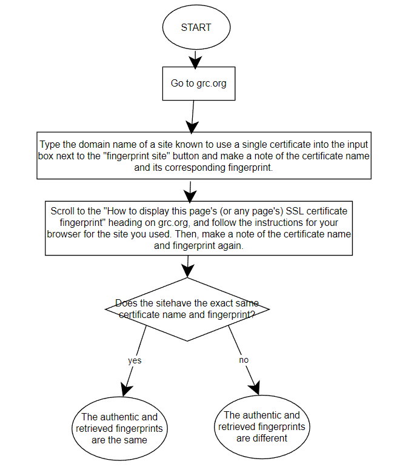

Fingerprints
Jakob McPherson
STEAM Center, Allen High School
TA2S3A: Computer Science III Pre-AP/IB
Mr. Ben-Yaakov
August 26, 2022
The primary purposes of a secure Hypertext Transfer Protocol Secure (HTTPS) connection are to allow the transfer of information from a computer to a website through the internet, and to ensure the confidentiality of that transferral. The HTTPS (Hypertext Transfer Protocol Secure) facilitates the communication between a computer and a website and uses SSL to encrypt and decrypt information so that sensitive data cannot be intercepted by a third party (Gibson, n.d.).
An HTTPS proxy appliance is a technology used by organizations that wish to spy on users to circumvent HTTPS' secure transmission of data. This process involves creating a fake web server certificate to impersonate the web server the user intends to interact with so that the proxy can see the data coming from the user while still appearing to be the real server (Gibson, n.d.).
Man in the Middle (MITM) attacks are cyberattacks in which an attacker inserts itself between two parties, receiving and distributing information from each party to the other. For such an attack to be successful, the MITM needs to be 'invisible' to both parties. That is, it needs to fool both parties into believing they are communicating directly with each other. This attack can be harmful because a MITM can spy on and possibly even alter sensitive data that the two parties assume are only being shared between them. However, the risk of these attacks is largely mitigated by encryption techniques, such as those used by HTTPS ("Man-in-the-middle attack," 2022).
A hash is a mathematical algorithm that maps inputs onto outputs of fixed size ("Hash function," 2022). In cryptography, an effective hash follows four criteria ("Hash tables: Hash functions," n.d.):
A certificate authority (CA) is an entity that verifies the identity of websites through documents, records, telephone numbers, etc. CAs assert the authenticity of a website by signing the site's security certificate. CAs act as trusted third parties that assure computers that their encrypted data is being sent to the site the computer wants to communicate with. This prevents malicious actors from impersonating websites because impersonators will not have the digital seal of approval from a CA and a computer will know that it is not communicating with a reputable site (Gibson, n.d.).
Secure Sockets Layer (SSL) interception cannot be directly prevented. The only way to avoid SSL interception is to avoid browsers, installed products, etc. which intercept SSL messages, but whether a program intercepts SSL messages is difficult to know beforehand (Gibson, n.d.).
SSL interception can be detected by comparing a remote server's certificate to the fake certificate potentially given by the SSL appliance. To impersonate the server's certificate, the fake certificate must use a public key to initially encrypt outgoing data from the computer and the corresponding private key to decrypt this data so it can be sent to the real server. The SSL appliance cannot know the server's private key because only the server itself knows its own private key, so the SSL appliance must have a private key distinct from that of the server, and the public key which corresponds to that distinct private key. The private key is distinct from the server's so the same must be true for the public key. Therefore, if the public keys of the server and the SSL appliance are different, SSL interception is occurring (Gibson, n.d.).
A false-positive is an incorrect classification of a negative result as a positive one. In SSL interception detection, a negative result would be that an interception is not occurring, while a positive result would be that an interception is occurring. Therefore, a false-positive would be a non-interception misclassified as an interception. A false-positive could be caused by assuming that a company which uses many different security certificates (e.g. Amazon or Google) is only using one, and testing for SSL interception through grc.org. Because a company like this uses multiple certificates, a computer and a testing website could receive different valid certificates of the company, leading the user to falsely believe that an SSL appliance was intercepting their data (Gibson, n.d.).
On the other hand, a false-negative is an interception misclassified as a non-interception. A false-negative could be caused by SSL appliances intentionally not intercepting messages from certain websites. For example, if one used grc.org to check for SSL interception and the SSL appliance intercepted messages from all websites but grc.org, the user might be incorrectly led to believe that no SSL interception is occurring because the public keys appear to match on grc.org (Gibson, n.d.).
With respect to the morality of SSL interception, there exist nuances in the subject. For example, different entities can be argued to have differing moral rights to eavesdrop on users's communications.
Schools, for example, may have intercept communications on their own computers to protect students from potential dangers on the internet. However, one could also argue that many cases of eavesdropping are a violation of privacy, especially when SSL messages are intercepted across all sites.
The government has a unique moral position in SSL interception because it is the only institution that must take action to punish criminal behavior. In many cases, potentially sensitive data has been used to further criminal investigations, such as in the case of the Golden State Killer, in which a serial murderer was caught partially through DNA information disclosed to online genetic testing websites. One could argue that the government is entitled to certain encrypted information that could aid in investigations. On the other hand, government interception of private information could be interpreted as a violation of the Fourth Amendment to the U.S. Constitution, which protects the privacy of U.S. citizens. Specifically, interception of private data could be considered an unreasonable search without probable cause.
Finally, internet service providers (ISPs) have no moral or legal justification for intercepting communications of their clients, with the possible exception of cases in which the government requires data from an ISP for a criminal investigation. Considering an internet service provider is a requirement to use the internet for most people, they must be expected to maintain confidentiality with their communications.
Flowchart of an algorithm to compare an authentic fingerprent with a fingerprint retrieved from a browser:

Gibson, S., & CORPORATION, G. R. (n.d.). Grc | SSL tls HTTPS web server certificate fingerprints. Home of Gibson Research Corporation . https://www.grc.com/fingerprints.htm#top
Hash function. (2001, September 27). Wikipedia, the free encyclopedia. Retrieved August 25, 2022, from https://en.wikipedia.org/w/index.php?title=Hash_function&oldid=1104293153
Hash tables: Hash functions. (n.d.). SparkNotes. https://www.sparknotes.com/cs/searching/hashtables/section2/#:~:text=There%20are%20four%20main%20characteristics,set%20of%20possible%20hash%20values
Man-in-the-middle attack. (2002, November 6). Wikipedia, the free encyclopedia. Retrieved August 25, 2022, from https://en.wikipedia.org/w/index.php?title=Man-in-the-middle_attack&oldid=1104088111